Versão deste manual: 1.00
Viplex Express
O ViPlex é uma solução indicada pela Intelbras e projetada para o gerenciamento de conteúdo em displays LED, permitindo a edição e reprodução de informações de forma eficiente em ambientes corporativos e comerciais. Este software é compatível com as controladoras da linha TB, incluindo modelos como TB2, TB50 e TB60.
Com uma plataforma web interativa, o ViPlex oferece aos operadores a capacidade de personalizar a ambientação conforme as necessidades específicas de cada perfil, garantindo uma experiência de uso intuitiva e confortável. A interface é amigável e facilita o acesso a diversas funcionalidades.
Para acessar a Interface Web do ViPlex, é necessário que o dispositivo esteja conectado à mesma rede que o computador. O acesso é feito através do endereço IP do dispositivo, simplificando a gestão e a atualização de conteúdos em tempo real.
NovaLCT
O NovaLCT é uma solução da novastar projetada para o gerenciamento de conteúdo em displays de LED,calibração e ajustes avançados. Este software é compatível com as controladoras da linha TB, incluindo modelos como TB2, TB50 e TB60.
HARDWARE
Via Cabo de Rede
Essa configuração utiliza uma conexão física entre o painel LED e o computador para garantir estabilidade e alta velocidade de transmissão. Siga os passos abaixo:
- Conecte o Cabo de Rede:
Insira uma extremidade do cabo de rede no painel LED e a outra no roteador ou diretamente no computador.
- Configuração de Rede:
No computador, certifique-se de que a conexão está configurada para obter um endereço IP automaticamente (DHCP).
- Abra o Software:
Inicie o ViPlex Express ou NovaLCT e certifique-se de que o dispositivo foi detectado na lista de terminais.
- Teste a Conexão:
Envie um conteúdo de teste para verificar se a comunicação entre o computador e o painel está funcionando corretamente.
LAN com Fio
A configuração LAN com fio é ideal para redes locais e ambientes corporativos. Siga os passos abaixo:
- Conecte o Cabo de Rede:
Insira uma extremidade do cabo de rede no painel LED e a outra no switch ou roteador da rede local.
- Desative o DHCP:
No painel LED, desative o serviço DHCP e configure um endereço IP estático.
- Configuração de Rede no Computador:
No computador, configure um endereço IP na mesma faixa do painel LED.
- Conexão com o Software:
Abra o ViPlex Express ou NovaLCT e conecte-se ao painel LED utilizando o endereço IP configurado.
- Verificação:
Envie um conteúdo de teste para garantir que o painel LED está respondendo corretamente.
Wi-Fi AP
O modo Wi-Fi AP permite que o painel LED funcione como um ponto de acesso, facilitando conexões sem fio. Siga os passos abaixo:
- Localize o SSID:
Encontre o SSID do painel LED (geralmente "AP" + últimos 8 dígitos do número de série). Essa informação está disponível na etiqueta do dispositivo.
- Conecte-se ao Wi-Fi:
No computador ou dispositivo móvel, conecte-se ao Wi-Fi utilizando o SSID e a senha padrão do painel LED.
- Abra o Software:
Inicie o ViPlex Express ou o aplicativo móvel ViPlex Handy e localize o painel LED na lista de dispositivos.
- Configuração Inicial:
Acesse as configurações do painel e, se necessário, altere o SSID ou a senha para maior segurança.
- Teste a Conexão:
Envie um conteúdo simples para o painel LED e confirme se a transmissão está funcionando.
Login
ViPlex Express
1. Abra o ViPlex Express e vá para a página Screens.
2. Clique em Refresh para atualizar a lista de dispositivos.
3. Selecione a controladora e clique em Connect. Digite a senha padrão "admin" e clique em OK.
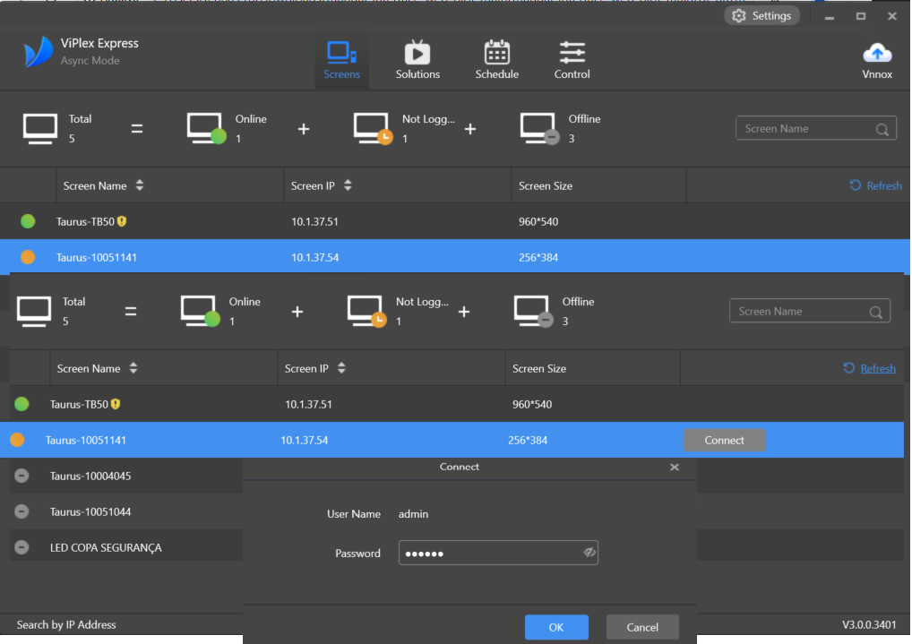NovaLCT
1. Abra o NovaLCT e vá para o menu User > Media Player Login.
2. Na caixa de diálogo Terminal List, clique em Refresh.
3. Selecione a controladora e clique em Connect System. Digite o nome de usuário "admin" e a senha padrão.
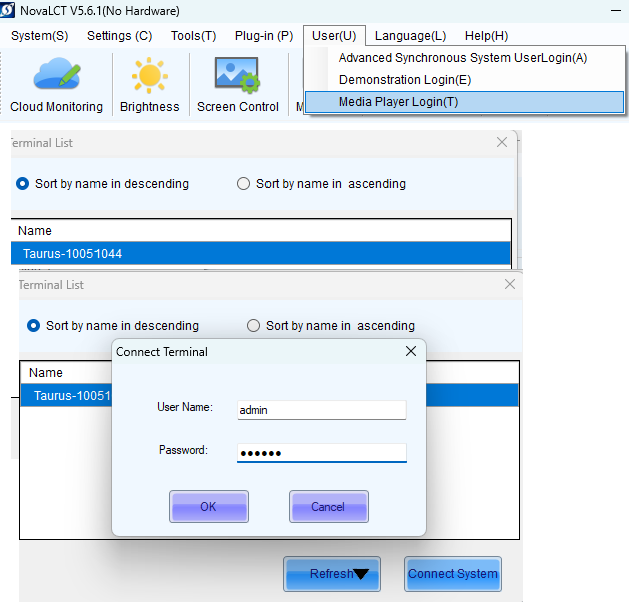ViPlex Handy
1. Abra o ViPlex Handy e vá para a página Local Devices.
2. Atualize a lista de dispositivos locais e selecione a controladora desejada. Clique em Connect e insira as credenciais.
Tela Inicial Viplex
Após a instalação, a página inicial exibe as controladoras disponiveis, menu superior e os atalhos, permitindo o gerenciamento completo das funções do dispositivo.
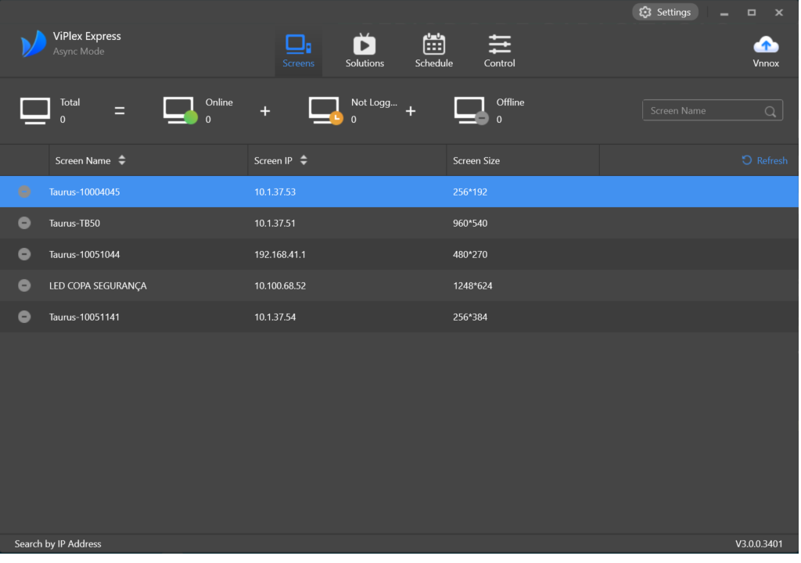- Screens: Exibe todos os dispositivos conectados, com informações como status de conexão, nome do dispositivo e armazenamento disponível.
- Solutions: Permite criar, editar e organizar conteúdos, como imagens, vídeos e layouts personalizados.
- Control: Ajuste as preferências do software, incluindo idioma, sincronização de horário, modo de exibição e atualizações automáticas.
Localizado na página inicial da tela, este painel exibe os dispositivos , como:
- Status da conexão (online/offline/not logged/Total)
- Ip,nome dos dispositivos e a resolução das controladoras
- Controladoras atualmente em execução
Localizado à direita de Screens , este menu oferece atalhos para as principais funções:
- Adicionar layout de exibição(New -> Regular Screen): Crie layouts com imagens para exibir no painel de Led desejado,edite podendo incluir horários específicos e transições animadas.
- Criar: 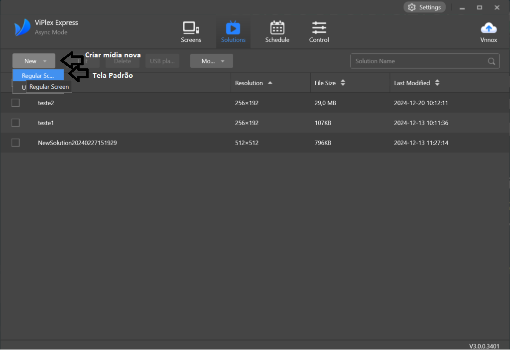
Localizado à direita de Schedule , este menu oferece atalhos para mais configurações de ajustes do software:
Dentro da mídia que você preparou,ao lado esquerdo de "View Schedule", há uma área de pré-visualização onde pode simular a exibição dos conteúdos antes de enviá-los ao painel LED. Utilize esta ferramenta para validar o design e as animações.
A mídia possui diversas opções
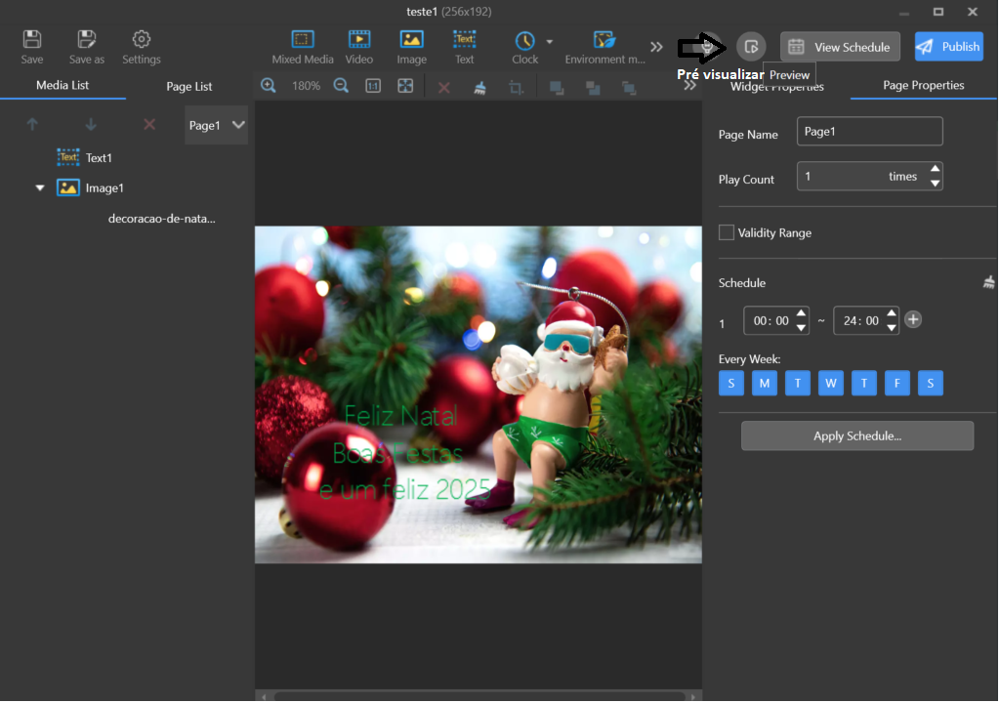Tela Inicial - NovaLCT
A interface do NovaLCT foi projetada para facilitar o gerenciamento, configuração e manutenção de painéis LED de maneira eficiente. Este guia apresenta uma visão detalhada e acessível das funções básicas para que você possa utilizar o software de forma plena.
- Acesso Inicial:
Ao abrir o NovaLCT, você será direcionado para a tela inicial. Caso necessário, atualize para a versão mais recente através da janela de atualização automática. Para se conectar a um painel LED:
- No menu superior, clique em User > Media Player Login.
- Na janela Terminal List, clique em Refresh para localizar dispositivos disponíveis.
- Selecione o painel desejado e clique em Connect System. Insira as credenciais padrão (usuário: "admin", senha: "123456") ou personalizadas.
- Se o painel não aparecer, clique em Specify IP, insira o endereço IP do painel manualmente e pressione Search. 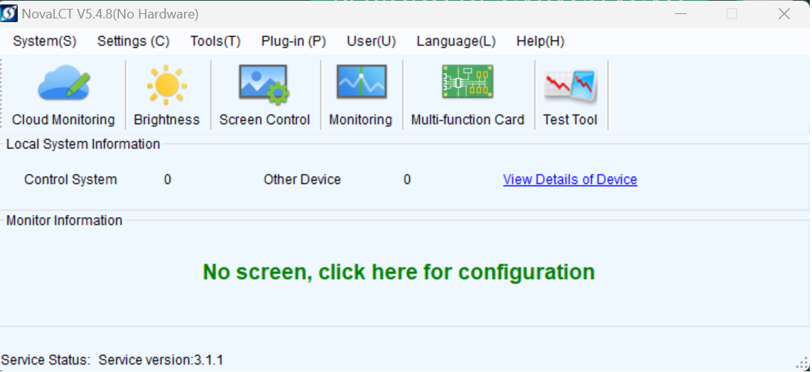
- Menu Superior:
O menu superior é o ponto central para acessar todas as funções principais:
- System (S): Permite configurar o sistema, carregar arquivos de configuração e gerenciar dispositivos conectados.
- Settings (C): Ajustes detalhados, incluindo resolução, frequência de atualização e parâmetros avançados das telas.
- Tools (T): Acesse ferramentas de diagnóstico e manutenção, como ajustes de brilho e correção de pixels defeituosos.
- Plug-in (P): Recursos adicionais para integrar novos módulos e funcionalidades extras.
- User (U): Gerencie contas e permissões de usuários.
- Language (L): Altere o idioma da interface conforme sua preferência.
- Help (H): Acesso direto à documentação oficial, tutoriais e suporte técnico. 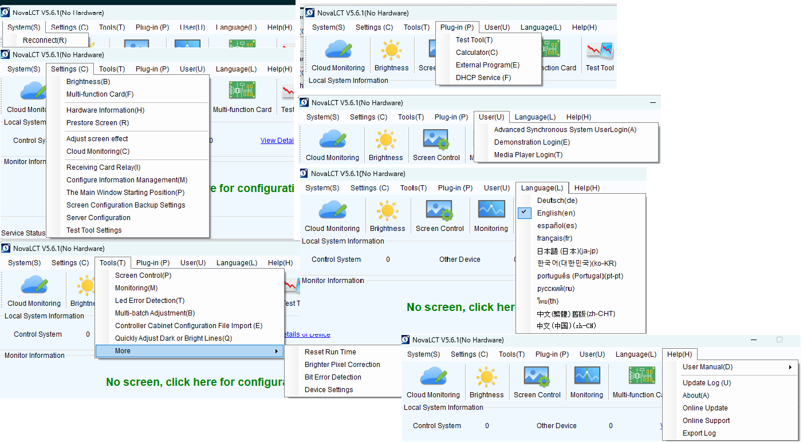
- Funções Principais:
A tela inicial apresenta atalhos para as funções mais usadas. Aqui estão as principais:
- Cloud Monitoring: Monitore o status dos painéis LED remotamente, verificando conectividade e recebendo alertas em tempo real. 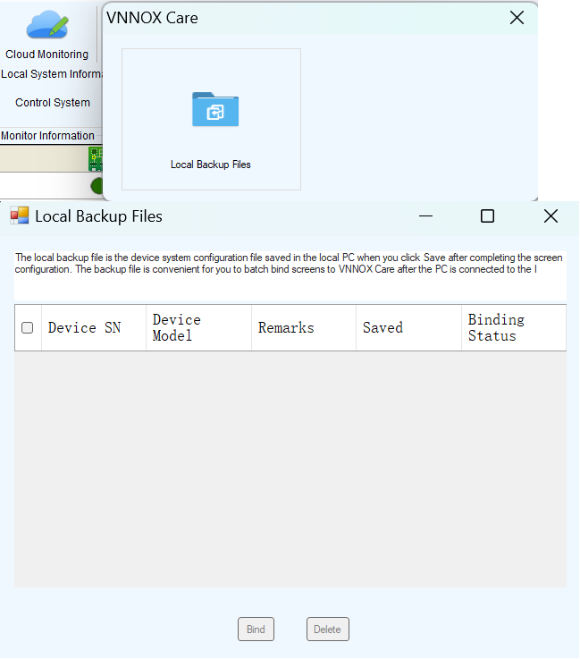
- Brightness: Ajuste manual ou automaticamente o brilho das telas para adequar às condições de luminosidade do ambiente. 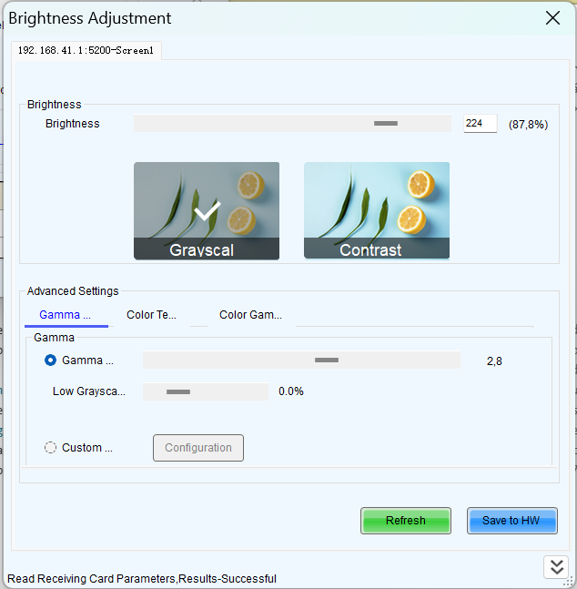
- Screen Control: Configure layouts personalizados, resoluções e parâmetros de posicionamento dos painéis LED. 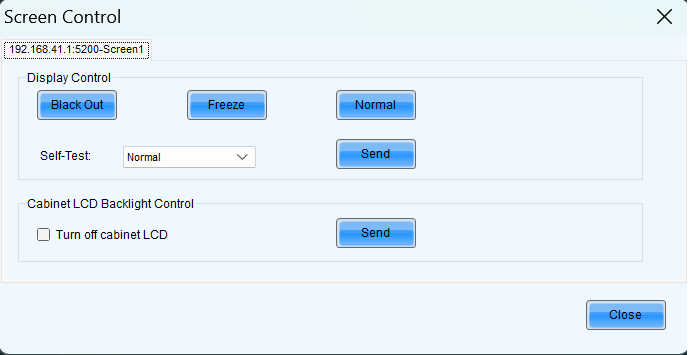
- Monitoring: Exibe informações essenciais de hardware, como temperatura, voltagem e status de conexão. 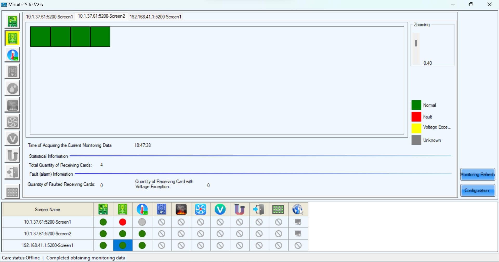
- Multi-function Card: Gerencie cartões multifuncionais conectados aos painéis, otimizando suas configurações específicas. 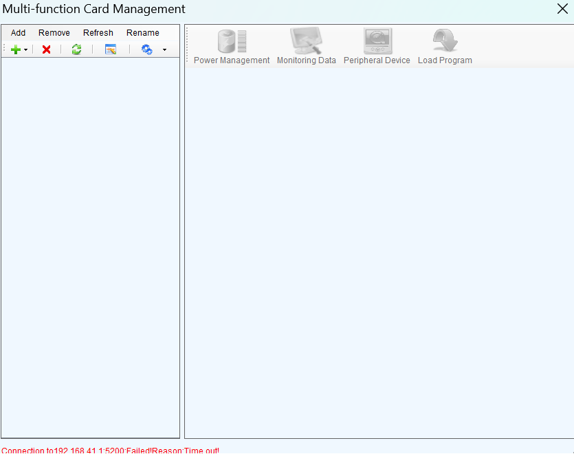
- Test Tool: Ferramenta dedicada para testes de desempenho, verificação de pixels defeituosos e sincronização das telas. 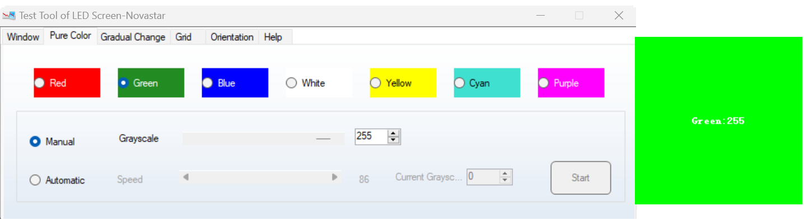
- Painel Central:
Localizado no centro da interface, este painel exibe informações detalhadas sobre os dispositivos conectados:
- Informações do Sistema Local: Número de controladores conectados, dispositivos adicionais e a versão do serviço.
- Monitoramento:
- Indicadores de status para cada dispositivo (verde para online e cinza para offline).
- Visualização do hardware conectado, como controladores e sensores de temperatura.
- Detalhes dos Dispositivos:
- Porta de Comunicação: Mostra o IP e porta de comunicação do dispositivo conectado.
- Tipo de Dispositivo: Identifica o modelo e especificações do controlador ou equipamento.
- Número de Dispositivos: Quantifica dispositivos ativos na conexão.
- S/N (Número de Série): Exibe o número de série do hardware.
- Operações: Área destinada a comandos ou ações específicas para cada dispositivo. 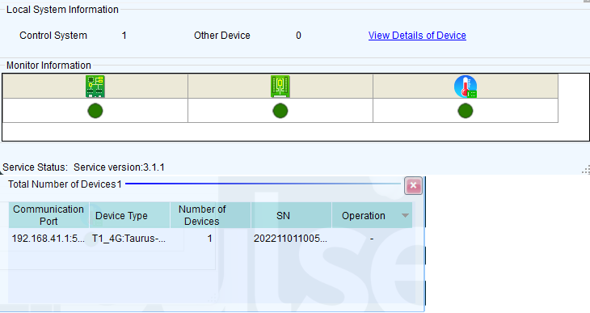
- Logout:
Para encerrar sua sessão com segurança, clique no botão de logout localizado no canto superior direito. O nome do usuário logado também será exibido para fácil identificação.
Novas Funcionalidades
Novidades do ViPlex
A combinação do ViPlex e NovaLCT oferece um conjunto completo de ferramentas para gerenciamento, configuração e manutenção de painéis LED. Com estas soluções, é possível:
- Gerenciar conteúdo de forma eficiente
- Realizar ajustes técnicos precisos
- Monitorar o funcionamento do sistema
- Manter a qualidade de exibição
Suporte ao NovaLCT
O NovaLCT é uma ferramenta complementar ao ViPlex, permitindo o controle avançado das configurações de exibição. Ele é usado principalmente para:
- Configurar brilho e contraste dos displays LED.
- Gerenciar layouts de exibição para diferentes.
Configurações Avançadas
- Mapeamento de módulos LED
- Configuração de refresh rate
- Ajuste de escala e posicionamento
- Correção de pixels defeituosos
Diagnóstico e Resolução de Problemas
Abaixo estão descrições detalhadas e soluções para problemas comuns encontrados no ViPlex e NovaLCT:
- Conexão de Rede Instável:
Descrição: O software não consegue detectar ou conectar-se ao painel LED. Isso pode ocorrer devido a problemas na rede ou configurações incorretas.
Solução: Verifique os cabos Ethernet e certifique-se de que estão conectados corretamente. Configure endereços IP na mesma faixa e, se necessário, desative temporariamente o firewall para testar a conexão.
- Falhas na Reprodução de Conteúdo:
Descrição: O conteúdo de vídeo ou imagem apresenta falhas ou atrasos durante a reprodução.
Solução: Verifique a compatibilidade dos formatos de mídia com o software. Atualize para a versão mais recente do ViPlex Express e revise as configurações de agendamento e reprodução.
- Problemas de Calibração:
Descrição: O brilho e as cores exibidos nos painéis não correspondem às configurações desejadas.
Solução: Utilize as ferramentas de calibração do NovaLCT para ajustar o brilho e a cromaticidade. Inspecione os módulos LED para identificar possíveis falhas de hardware.
- Erros de Sincronização:
Descrição: Os horários de reprodução agendados não coincidem com os configurados no software.
Solução: Sincronize os relógios do sistema e do painel LED. Verifique se o fuso horário está configurado corretamente em ambos os dispositivos.
Calibração e Ajustes Avançados de Horário
Calibração de Brilho
- Configurar brilho e contraste dos displays LED.
- Abrir o Software:
Inicie o Viplex e conecte-se ao painel LED utilizando as credenciais configuradas.
- Acessar Configuração de Layout:
Na interface principal, vá até "Solutions" e selecione a opção "New > Regular Screen".
- Configurar Elementos do Layout:
Adicione os seguintes elementos ao layout:
- Imagens ou Vídeos: Arraste e solte os arquivos desejados no painel de edição.
- Texto: Insira caixas de texto para adicionar mensagens dinâmicas ou fixas.
- Relógios ou Temporizadores: Escolha widgets interativos para exibição de horários ou contagens regressivas.
- Definir Horários de Exibição:
No menu "View Schedule", configure os horários de início e término para cada layout. Certifique-se de que não há sobreposição de horários.
- Pré-visualizar e Salvar:
Clique na opção "Preview" para verificar como o layout será exibido no painel LED. Após confirmar, salve as configurações.
- Enviar para o Painel:
Utilize a função "Publish" para aplicar o layout configurado ao painel.
- Beginner's Guide:
Para uma introdução mais detalhada, consulte o guia de início rápido para configurar layouts ao lado esquerdo da função "View Schedule".
Realize ajustes precisos para adequar o brilho às condições do ambiente.
Passo 1: Acesse o NovaLCT e selecione a opção "Calibração de Brilho" no menu principal.
Passo 2: Conecte-se ao painel LED e inicie o processo de calibração.
Passo 3: Ajuste os níveis de brilho utilizando as barras deslizantes, observando o impacto em tempo real no painel.
Passo 4: Salve as configurações após atingir o nível desejado para evitar alterações acidentais.
Passo 5: Verifique o resultado final e ajuste conforme necessário para obter a melhor qualidade visual.
Observação: Certifique-se de que o painel LED esteja conectado e operando corretamente antes de iniciar a calibração.
Definir Horários de Exibição de Mídia
O gerenciamento de layouts permite programar diferentes disposições de conteúdo para serem exibidas em horários específicos. Siga os passos abaixo para configurar: